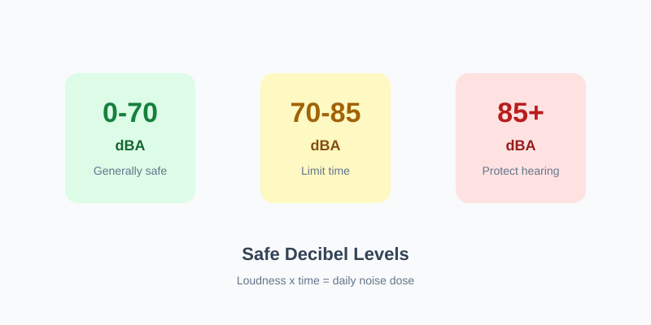

Safe Decibel Levels: Chart, Exposure Times & Everyday Examples
Updated Aug 6, 2026 • 7 min read
Safe decibel levels depend on both loudness and time. As a practical rule: sounds around 70 dBA or lower are generally safe for long daily exposure; from about 85 dBA upward, risk rises quickly unless you shorten time or wear protection.
Quick answer
- 70 dBA or below: usually fine for all-day listening / living
- ~85 dBA: common occupational limit for ~8 hours (NIOSH-style)
- Every +3 dB: safe time is roughly cut in half
- 100 dBA or louder: minutes matter—use earplugs or leave
Guidance for awareness, not legal compliance. Values are typically A-weighted (dBA).
Everyday sounds (typical levels)
Use this as a map—not a lab measurement. Real rooms and devices vary.
| Sound | Approx. level | Risk note |
|---|---|---|
| Quiet bedroom / library | 30-40 dBA | Safe |
| Normal conversation | 60-65 dBA | Safe |
| Busy restaurant / vacuum | 70-80 dBA | Limit long days |
| Heavy traffic / blender | ~85 dBA | Hours capped |
| Motorcycle / loud gym | 95-100 dBA | Minutes |
| Concert / club / max headphones | 100-110+ dBA | Protect / step away |
| Siren / fireworks (close) | 120-140 dBA | Immediate risk |
How long is safe at each level?
Using the common 3 dB exchange rate (NIOSH-style): start at 85 dBA ≈ 8 hours, then halve time for every +3 dB.
| Level | Approx. safe time |
|---|---|
| 70 dBA | All day (generally) |
| 85 dBA | 8 hours |
| 88 dBA | 4 hours |
| 91 dBA | 2 hours |
| 94 dBA | 1 hour |
| 97 dBA | 30 minutes |
| 100 dBA | 15 minutes |
| 103 dBA | ~7-8 minutes |
| 106 dBA | ~4 minutes |
| 109 dBA | ~2 minutes |
Want the math behind the table? See The 3 dB Rule Explained.
No meter? Use these field rules
You do not need a reading for every decision. These cues map well to unsafe zones:
- Raise-your-voice rule: if you must raise your voice to talk to someone an arm’s length away, you are likely near or above ~85 dBA.
- Ringing / muffled ears after: treat that event as an overexposure and give your ears quiet time.
- Pain or discomfort: leave or protect immediately—pain is not required for damage, but it is a hard stop.
- Headphones on a commute: if you keep turning volume up to beat train/bus noise, switch to ANC if you have it, or lower expectations—masking is how people accidentally hit 95-100 dBA.
Check your own level
Numbers on a chart only help if you can compare them to your room, commute, or playlist.
- Open our Online Sound Meter and allow microphone access.
- Hold the phone still, mic unobstructed; measure for ~30-60 seconds (not one loud spike).
- Compare the average to the tables above. Near or above 85 dBA for long stretches → shorten time, lower volume, add distance, or wear earplugs.
Phone and browser meters are useful for screening. They are not a substitute for a calibrated meter when you need legal or occupational compliance. Tips: How to measure more reliably.
Common questions
Is 70 dB always safe?
For most people, a daily average around 70 dBA or lower is a solid long-term target (NIDCD/CDC messaging). Short spikes above that are normal; the problem is hours at high levels stacking up.
Is 85 dB safe?
Only for a limited time. Under the NIOSH-style model, ~85 dBA is about an 8-hour daily dose. Louder than that, and the clock shrinks fast. “Safe” without a time limit is the wrong framing.
Do kids need a lower limit?
Be more conservative. Children cannot reliably report early warning signs, and toys, tablets, and events can be louder than adults notice. Prefer lower volume, shorter sessions, and distance from speakers. For sleep machines, measure at the crib—see our baby white-noise guide.
What about sleep and neighborhood noise?
Hearing-damage thresholds (like 85 dBA) are not the same as sleep disturbance. Nighttime levels well below that can still disrupt rest. If the goal is sleep quality, aim much quieter than “hearing safety” limits—typically bedroom levels closer to the 30-40 dBA range when possible.
What to do next
- Headphones / earbuds: Headphone volume safety guide
- Workplace noise: Is my workplace too loud?
- Baby white noise: Safe volume & placement